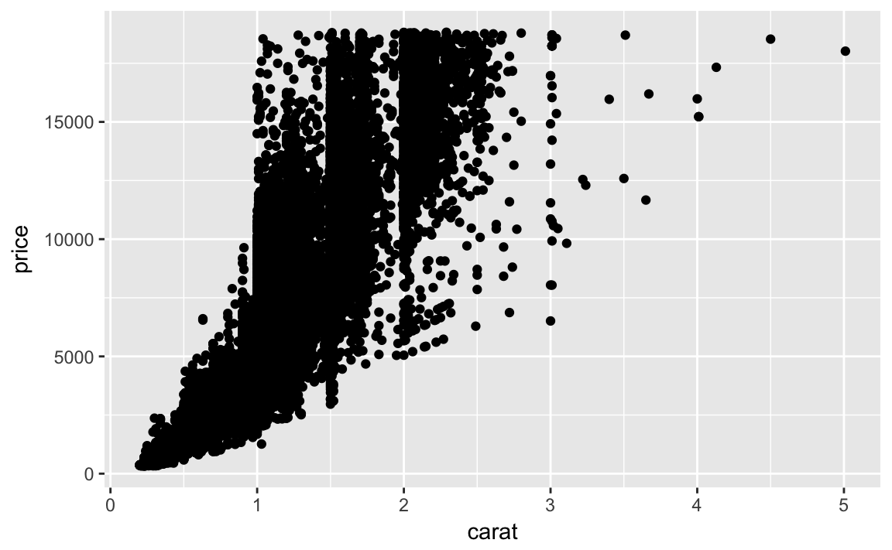
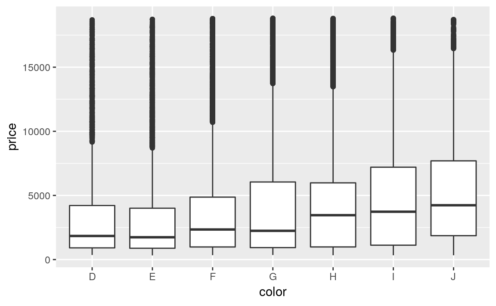
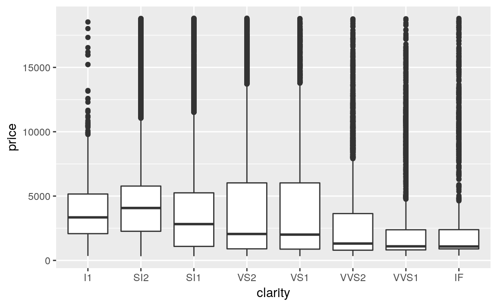
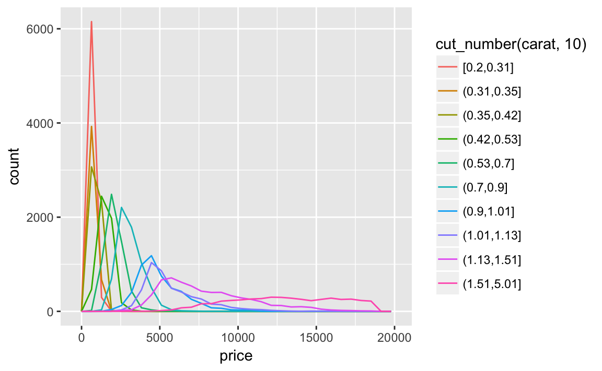
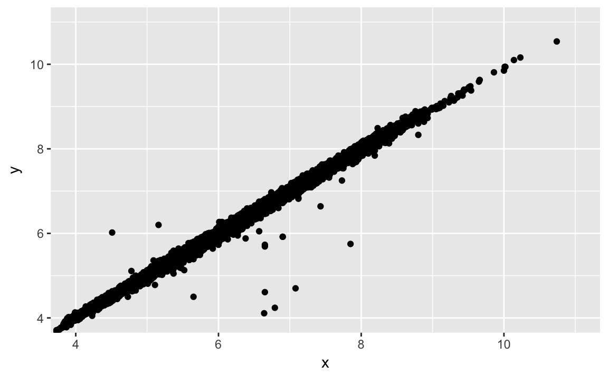

7 Exploratory Data Analysis
7.1 Introduction
library("tidyverse")
library("viridis")
library("forcats")This will also use data from nycflights13,
library("nycflights13")7.2 Questions
7.3 Variation
7.3.1 Exercise 1
Explore the distribution of each of the x, y, and z variables in diamonds. What do you learn? Think about a diamond and how you might decide which dimension is the length, width, and depth.
In order to make it easier to plot them, I’ll reshape the dataset so that I can use the variables as facets.
diamonds %>%
mutate(id = row_number()) %>%
select(x, y, z, id) %>%
gather(variable, value, -id) %>%
ggplot(aes(x = value)) +
geom_density() +
geom_rug() +
facet_grid(variable ~ .)
There several noticeable features of the distributions
- They are right skewed, with most diamonds small, but a few very large ones.
- There is an outlier in
y, andz(see the rug) - All three distributions have a bimodality (perhaps due to some sort of threshold)
According to the documentation for diamonds: x is length, y is width, and z is depth. I don’t know if I would have figured that out before; maybe if there was data on the type of cuts.
7.3.2 Exercise 2
Explore the distribution of price. Do you discover anything unusual or surprising? (Hint: Carefully think about the binwidth and make sure you try a wide range of values.)
- The price data has many spikes, but I can’t tell what each spike corresponds to. The following plots don’t show much difference in the distributions in the last one or two digits.
- There are no diamonds with a price of $1,500
- There’s a bulge in the distribution around $7,500.
ggplot(filter(diamonds, price < 2500), aes(x = price)) +
geom_histogram(binwidth = 10, center = 0)
ggplot(filter(diamonds), aes(x = price)) +
geom_histogram(binwidth = 100, center = 0)
Distribution of last digit
diamonds %>%
mutate(ending = price %% 10) %>%
ggplot(aes(x = ending)) +
geom_histogram(binwidth = 1, center = 0) +
geom_bar()
diamonds %>%
mutate(ending = price %% 100) %>%
ggplot(aes(x = ending)) +
geom_histogram(binwidth = 1) +
geom_bar()
diamonds %>%
mutate(ending = price %% 1000) %>%
filter(ending >= 500, ending <= 800) %>%
ggplot(aes(x = ending)) +
geom_histogram(binwidth = 1) +
geom_bar()
7.3.3 Exercise 3
How many diamonds are 0.99 carat? How many are 1 carat? What do you think is the cause of the difference?
There are more than 70 times as many 1 carat diamonds as 0.99 carat diamond.
diamonds %>%
filter(carat >= 0.99, carat <= 1) %>%
count(carat)
#> # A tibble: 2 x 2
#> carat n
#> <dbl> <int>
#> 1 0.99 23
#> 2 1 1558I don’t know exactly the process behind how carats are measured, but some way or another some diamonds carat values are being “rounded up”, because presumably there is a premium for a 1 carat diamond vs. a 0.99 carat diamond beyond the expected increase in price due to a 0.01 carat increase.
To check this intuition, we’d want to look at the number of diamonds in each carat range to seem if there is an abnormally low number at 0.99 carats, and an abnormally high number at 1 carat.
diamonds %>%
filter(carat >= 0.9, carat <= 1.1) %>%
count(carat) %>%
print(n = 30)
#> # A tibble: 21 x 2
#> carat n
#> <dbl> <int>
#> 1 0.9 1485
#> 2 0.91 570
#> 3 0.92 226
#> 4 0.93 142
#> 5 0.94 59
#> 6 0.95 65
#> 7 0.96 103
#> 8 0.97 59
#> 9 0.98 31
#> 10 0.99 23
#> 11 1 1558
#> 12 1.01 2242
#> 13 1.02 883
#> 14 1.03 523
#> 15 1.04 475
#> 16 1.05 361
#> 17 1.06 373
#> 18 1.07 342
#> 19 1.08 246
#> 20 1.09 287
#> 21 1.1 2787.3.4 Exercise 4
Compare and contrast coord_cartesian() vs xlim() or ylim() when zooming in on a histogram. What happens if you leave binwidth unset? What happens if you try and zoom so only half a bar shows?
coord_cartesian simply zooms in on the area specified by the limits. The calculation of the histogram is unaffected.
ggplot(diamonds) +
geom_histogram(mapping = aes(x = price)) +
coord_cartesian(xlim = c(100, 5000), ylim = c(0, 3000))
#> `stat_bin()` using `bins = 30`. Pick better value with `binwidth`.
However, the xlim and ylim functions first drop any values outside the limits (the ylim doesn’t matter in this case), then calculates the histogram, and draws the graph with the given limits.
ggplot(diamonds) +
geom_histogram(mapping = aes(x = price)) +
xlim(100, 5000) +
ylim(0, 3000)
#> `stat_bin()` using `bins = 30`. Pick better value with `binwidth`.
#> Warning: Removed 14714 rows containing non-finite values (stat_bin).
#> Warning: Removed 5 rows containing missing values (geom_bar).
7.4 Missing Values
7.4.1 Exercise 1
What happens to missing values in a histogram? What happens to missing values in a bar chart? > Why is there a difference?
Missing values are removed when the number of observations in each bin are calculated. See the warning message: Removed 9 rows containing non-finite values (stat_bin)
diamonds2 <- diamonds %>%
mutate(y = ifelse(y < 3 | y > 20, NA, y))
ggplot(diamonds2, aes(x = y)) +
geom_histogram()
#> `stat_bin()` using `bins = 30`. Pick better value with `binwidth`.
#> Warning: Removed 9 rows containing non-finite values (stat_bin).
In geom_bar, NA is treated as another category. The x aesthetic in geom_bar requires a discrete (categorical) variable, and missing values act like another category.
diamonds %>%
mutate(cut = if_else(runif(n()) < 0.1, NA_character_, as.character(cut))) %>%
ggplot() +
geom_bar(mapping = aes(x = cut))
In a histogram, the x aesthetic variable needs to be numeric, and stat_bin groups the observations by ranges into bins. Since the numeric value of the NA observations is unknown, they cannot be placed in a particular bin, and are dropped.
7.4.2 Exercise 2
What does na.rm = TRUE do in mean() and sum()?
This option removes NA values from the vector prior to calculating the mean and sum.
mean(c(0, 1, 2, NA), na.rm = TRUE)
#> [1] 1
sum(c(0, 1, 2, NA), na.rm = TRUE)
#> [1] 37.5 Covariation
7.5.1 A categorical and continuous variable
7.5.1.1 Exercise 1
Use what you’ve learned to improve the visualization of the departure times
of canceled vs. non-canceled flights.
Instead of a freqplot use a box-plot
nycflights13::flights %>%
mutate(
canceled = is.na(dep_time),
sched_hour = sched_dep_time %/% 100,
sched_min = sched_dep_time %% 100,
sched_dep_time = sched_hour + sched_min / 60
) %>%
ggplot() +
geom_boxplot(mapping = aes(y = sched_dep_time, x = canceled))
7.5.1.2 Exercise 2
What variable in the diamonds dataset is most important for predicting the price of a diamond? How is that variable correlated with cut? Why does the combination of those two relationships lead to lower quality diamonds being more expensive?
What are the general relationships of each variable with the price of the diamonds? I will consider the variables: carat, clarity, color, and cut. I ignore the dimensions of the diamond since carat measures size, and thus incorporates most of the information contained in these variables.
Both price and carat are continuous variables, so I will use scatterplot visualize their relationship.
ggplot(diamonds, aes(x = carat, y = price)) +
geom_point() However, since there is a large number of points in the data, I will use a boxplot by binning carat (as suggested in the chapter).
ggplot(data = diamonds, mapping = aes(x = carat, y = price)) +
geom_boxplot(mapping = aes(group = cut_width(carat, 0.1))) Note that the choice of the binning width is important, as if it were too large it would obscure any relationship, and if it were too small, the values in the bins could be too variable to reveal underlying trends.
Note that the choice of the binning width is important, as if it were too large it would obscure any relationship, and if it were too small, the values in the bins could be too variable to reveal underlying trends.
The variables color and clarity are ordered categorical variables. The chapter suggests visualizing a categorical and continuous variable using frequency polygons or boxplots. In this case, I will use a box plot since it will better show a relationship over the variables.
ggplot(diamonds, aes(x = color, y = price)) +
geom_boxplot()
ggplot(data = diamonds) +
geom_boxplot(mapping = aes(x = clarity, y = price))
There is a strong relationship between carat and price. The is a weak positive relationship between color and price, and, surprisingly, a weak negative relationship between clarity and price. For both clarity and color, there is a large amount of variation within each category, which overwhelms the between category trend. Carat is clearly the best predictor of its price.
Now that we have established that carat appears to be the best predictor of price, what is the relationship between it and cut? Since this is an example of a continuous (carat) and categorical (cut) variable, it can be visualized with a box plot.
ggplot(diamonds, aes(x = cut, y = carat)) +
geom_boxplot()
There is a lot of variability in the distribution of carat sizes within each cut category. There is a slight negative relationship between carat and cut. Noticeably, the largest carat diamonds have a cut of “Fair” (the lowest).
This negative relationship can be due to the way in which diamonds are selected for sale. A larger diamond can be profitably sold with a lower quality cut, while a smaller diamond requires a better cut.
7.5.1.3 Exercise 3
Install the ggstance package, and create a horizontal box plot. How does this compare to using coord_flip()?
Earlier we created a horizontal box plot of the distribution hwy by class, using geom_boxplot and coord_flip:
ggplot(data = mpg) +
geom_boxplot(mapping = aes(x = reorder(class, hwy, FUN = median), y = hwy)) +
coord_flip()
In this case the output looks the same, but in the aesthetics the x and y are flipped from the previous case.
library("ggstance")
#>
#> Attaching package: 'ggstance'
#> The following objects are masked from 'package:ggplot2':
#>
#> geom_errorbarh, GeomErrorbarh
ggplot(data = mpg) +
geom_boxploth(mapping = aes(y = reorder(class, hwy, FUN = median), x = hwy))
7.5.1.4 Exercise 4
One problem with box plots is that they were developed in an era of much smaller datasets and tend to display a prohibitively large number of `outlying values''. One approach to remedy this problem is the letter value plot. Install the **lvplot** package, and try usinggeom_lv()` to display the distribution of price vs cut. What do you learn?
How do you interpret the plots?
The boxes of the letter-value plot correspond to many more quantiles. They are useful for larger datasets because
- larger datasets can give precise estimates of quantiles beyond the quartiles, and
- in expectation, larger datasets should have more outliers (in absolute numbers).
The letter-value plot is described in:
Heike Hofmann, Karen Kafadar, and Hadley Wickham. 2011. “Letter-value plots: Boxplots for large data” http://vita.had.co.nz/papers/letter-value-plot.pdf
library("lvplot")
ggplot(diamonds, aes(x = cut, y = price)) +
geom_lv()
7.5.1.5 Exercise 5
Compare and contrast geom_violin() with a faceted geom_histogram(), or a colored geom_freqpoly(). What are the pros and cons of each method?
I produce plots for these three methods below. The geom_freqpoly is better for look-up: meaning that given a price, it is easy to tell which cut has the highest density. However, the overlapping lines makes it difficult to distinguish how the overall distributions relate to each other. The geom_violin and faceted geom_histogram have similar strengths and weaknesses. It is easy to visually distinguish differences in the overall shape of the distributions (skewness, central values, variance, etc). However, since we can’t easily compare the vertical values of the distribution, its difficult to look up which category has the highest density for a given price. All of these methods depend on tuning parameters to determine the level of smoothness of the distribution.
ggplot(data = diamonds, mapping = aes(x = price, y = ..density..)) +
geom_freqpoly(mapping = aes(colour = cut), binwidth = 500)
ggplot(data = diamonds, mapping = aes(x = price)) +
geom_histogram() +
facet_wrap(~ cut, ncol = 1, scales = "free_y")
#> `stat_bin()` using `bins = 30`. Pick better value with `binwidth`.
ggplot(data = diamonds, mapping = aes(x = cut, y = price)) +
geom_violin() +
coord_flip()
The violin plot was first described in
Hintze JL, Nelson RD (1998). “Violin Plots: A Box Plot-Density Trace Synergism.” The American Statistician, 52(2), 181–184
7.5.1.6 Exercise 6
If you have a small dataset, it’s sometimes useful to use geom_jitter() to see the relationship between a continuous and categorical variable. The ggbeeswarm package provides a number of methods similar to geom_jitter(). List them and briefly describe what each one does.
There are two methods:
geom_quasirandomthat produces plots that resemble something between jitter and violin. There are several different methods that determine exactly how the random location of the points is generated.geom_beeswarmcreates a shape similar to a violin plot, but by offsetting the points.
I’ll use the mpg box plot example since these methods display individual points, they are better suited for smaller datasets.
library("ggbeeswarm")
ggplot(data = mpg) +
geom_quasirandom(mapping = aes(x = reorder(class, hwy, FUN = median),
y = hwy))
ggplot(data = mpg) +
geom_quasirandom(mapping = aes(x = reorder(class, hwy, FUN = median),
y = hwy),
method = "tukey")
ggplot(data = mpg) +
geom_quasirandom(mapping = aes(x = reorder(class, hwy, FUN = median),
y = hwy),
method = "tukeyDense")
ggplot(data = mpg) +
geom_quasirandom(mapping = aes(x = reorder(class, hwy, FUN = median),
y = hwy),
method = "frowney")
ggplot(data = mpg) +
geom_quasirandom(mapping = aes(x = reorder(class, hwy, FUN = median),
y = hwy),
method = "smiley")
ggplot(data = mpg) +
geom_beeswarm(mapping = aes(x = reorder(class, hwy, FUN = median),
y = hwy))
7.5.2 Two categorical variables
7.5.2.1 Exercise 1
How could you rescale the count dataset above to more clearly show the distribution of cut within color, or color within cut?
To clearly show the distribution of cut within color, calculate a new variable prop which is the proportion of each cut within a color. This is done using a grouped mutate.
diamonds %>%
count(color, cut) %>%
group_by(color) %>%
mutate(prop = n / sum(n)) %>%
ggplot(mapping = aes(x = color, y = cut)) +
geom_tile(mapping = aes(fill = prop)) +
scale_fill_viridis(limits = c(0, 1))
Similarly, to scale by the distribution of color within cut,
diamonds %>%
count(color, cut) %>%
group_by(cut) %>%
mutate(prop = n / sum(n)) %>%
ggplot(mapping = aes(x = color, y = cut)) +
geom_tile(mapping = aes(fill = prop)) +
scale_fill_viridis(limits = c(0, 1))
I add limit = c(0, 1) to put the color scale between (0, 1). These are the logical boundaries of proportions. This makes it possible to compare each cell to its actual value, and would improve comparisons across multiple plots. However, it ends up limiting the colors and makes it harder to compare within the dataset. However, using the default limits of the minimum and maximum values makes it easier to compare within the dataset the emphasizing relative differences, but harder to compare across datasets.
7.5.2.2 Exercise 2
Use geom_tile() together with dplyr to explore how average flight delays vary by destination and month of year. What makes the plot difficult to read? How could you improve it?
flights %>%
group_by(month, dest) %>%
summarise(dep_delay = mean(dep_delay, na.rm = TRUE)) %>%
ggplot(aes(x = factor(month), y = dest, fill = dep_delay)) +
geom_tile() +
labs(x = "Month", y = "Destination", fill = "Departure Delay")
There are several things that could be done to improve it,
- sort destinations by a meaningful quantity (distance, number of flights, average delay)
- remove missing values
- better color scheme (viridis)
How to treat missing values is difficult. In this case, missing values correspond to airports which don’t have regular flights (at least one flight each month) from NYC. These are likely smaller airports (with higher variance in their average due to fewer observations).
library("viridis")
flights %>%
group_by(month, dest) %>%
summarise(dep_delay = mean(dep_delay, na.rm = TRUE)) %>%
group_by(dest) %>%
filter(n() == 12) %>%
ungroup() %>%
mutate(dest = fct_reorder(dest, dep_delay)) %>%
ggplot(aes(x = factor(month), y = dest, fill = dep_delay)) +
geom_tile() +
scale_fill_viridis() +
labs(x = "Month", y = "Destination", fill = "Departure Delay")
7.5.2.3 Exercise 3
Why is it slightly better to use aes(x = color, y = cut) rather than aes(x = cut, y = color) in the example above?
It’s usually better to use the categorical variable with a larger number of categories or the longer labels on the y axis. If at all possible, labels should be horizontal because that is easier to read.
However, switching the order doesn’t result in overlapping labels.
diamonds %>%
count(color, cut) %>%
ggplot(mapping = aes(y = color, x = cut)) +
geom_tile(mapping = aes(fill = n))
Another justification, for switching the order is that the larger numbers are at the top when x = color and y = cut, and that lowers the cognitive burden of interpreting the plot.
7.5.3 Two continuous variables
7.5.3.1 Exercise 1
Instead of summarizing the conditional distribution with a box plot, you could use a frequency polygon. What do you need to consider when using cut_width() vs cut_number()? How does that impact a visualization of
the 2d distribution of carat and price?
When using cut_width the number in each bin may be unequal. The distribution of carat is right skewed so there are few diamonds in those bins.
ggplot(data = diamonds,
mapping = aes(x = price,
colour = cut_width(carat, 0.3))) +
geom_freqpoly()
#> `stat_bin()` using `bins = 30`. Pick better value with `binwidth`. Plotting the density instead of counts will make the distributions comparable, although the bins with few observations will still be hard to interpret.
Plotting the density instead of counts will make the distributions comparable, although the bins with few observations will still be hard to interpret.
ggplot(data = diamonds,
mapping = aes(x = price,
y = ..density..,
colour = cut_width(carat, 0.3))) +
geom_freqpoly()
#> `stat_bin()` using `bins = 30`. Pick better value with `binwidth`. Plotting the density instead of counts will make the distributions comparable, although the bins with few observations will still be hard to interpret.
Plotting the density instead of counts will make the distributions comparable, although the bins with few observations will still be hard to interpret.
ggplot(data = diamonds,
mapping = aes(x = price,
colour = cut_number(carat, 10))) +
geom_freqpoly()
#> `stat_bin()` using `bins = 30`. Pick better value with `binwidth`. Since there are equal numbers in each bin, the plot looks the same if density is used for the y aesthetic (although the values are on a different scale).
Since there are equal numbers in each bin, the plot looks the same if density is used for the y aesthetic (although the values are on a different scale).
ggplot(data = diamonds,
mapping = aes(x = price,
y = ..density..,
colour = cut_number(carat, 10))) +
geom_freqpoly()
#> `stat_bin()` using `bins = 30`. Pick better value with `binwidth`.
7.5.3.2 Exercise 2
Visualize the distribution of carat, partitioned by price.
With a box plot, partitioning into an 10 bins with the same number of observations:
ggplot(diamonds, aes(x = cut_number(price, 10), y = carat)) +
geom_boxplot() +
coord_flip() +
xlab("Price") With a box plot, partitioning into an bins of $2,000 with the width of the box determined by the number of observations. I use
With a box plot, partitioning into an bins of $2,000 with the width of the box determined by the number of observations. I use boundary = 0 to ensure the first bin goes from $0–$2,000.
ggplot(diamonds, aes(x = cut_width(price, 2000, boundary = 0), y = carat)) +
geom_boxplot(varwidth = TRUE) +
coord_flip() +
xlab("Price")
7.5.3.3 Exercise 3
How does the price distribution of very large diamonds compare to small diamonds. Is it as you expect, or does it surprise you?
The distribution of very large diamonds is more variable. I am not surprised, since I knew little about diamond prices. After the fact, it does not seem surprising (as many thing do). I would guess that this is due to the way in which diamonds are selected for retail sales. Suppose that someone selling a diamond only finds it profitable to sell it if some combination size, cut, clarity, and color are above a certain threshold. The smallest diamonds are only profitable to sell if they are exceptional in all the other factors (cut, clarity, and color), so the small diamonds sold have similar characteristics. However, larger diamonds may be profitable regardless of the values of the other factors. Thus we will observe large diamonds with a wider variety of cut, clarity, and color and thus more variability in prices.
7.5.3.4 Exercise 4
Combine two of the techniques you’ve learned to visualize the combined distribution of cut, carat, and price.
There are many options to try, so your solutions may vary from mine. Here are a few options that I tried.
ggplot(diamonds, aes(x = carat, y = price)) +
geom_hex() +
facet_wrap(~ cut, ncol = 1) +
scale_fill_viridis()
ggplot(diamonds, aes(x = cut_number(carat, 5), y = price, colour = cut)) +
geom_boxplot()
ggplot(diamonds, aes(colour = cut_number(carat, 5), y = price, x = cut)) +
geom_boxplot()
7.5.3.5 Exercise 5
Two dimensional plots reveal outliers that are not visible in one dimensional plots. For example, some points in the plot below have an unusual combination of x and y values, which makes the points outliers even though their x and y values appear normal when examined separately.
ggplot(data = diamonds) +
geom_point(mapping = aes(x = x, y = y)) +
coord_cartesian(xlim = c(4, 11), ylim = c(4, 11))
Why is a scatterplot a better display than a binned plot for this case?
In this case, there is a strong relationship between \(x\) and \(y\). The outliers in this case are not extreme in either \(x\) or \(y\). A binned plot would not reveal these outliers, and may lead us to conclude that the largest value of \(x\) was an outlier even though it appears to fit the bivariate pattern well.
The later chapter Model Basics discusses fitting models to bivariate data and plotting residuals, which would reveal this outliers.
7.6 Patterns and models
No exercises
7.7 ggplot2 calls
No exercises
7.8 Learning more
No exercises.